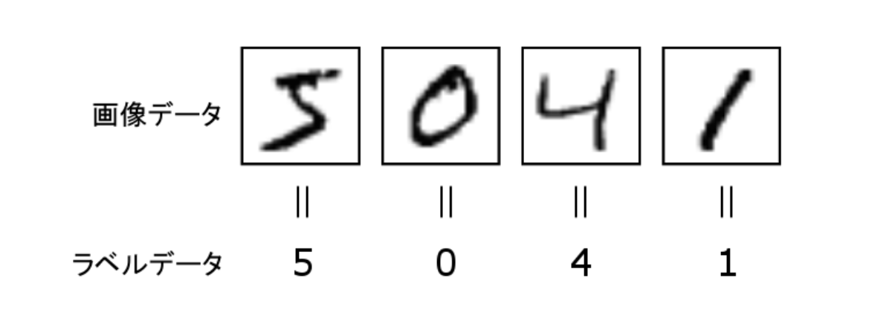
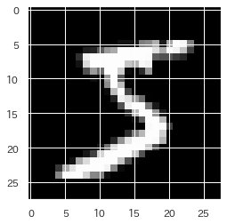
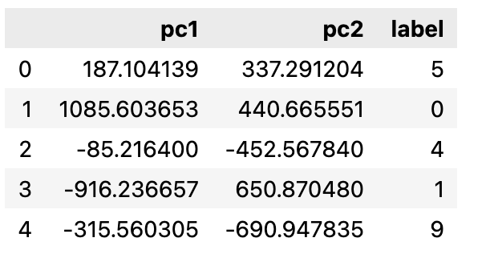
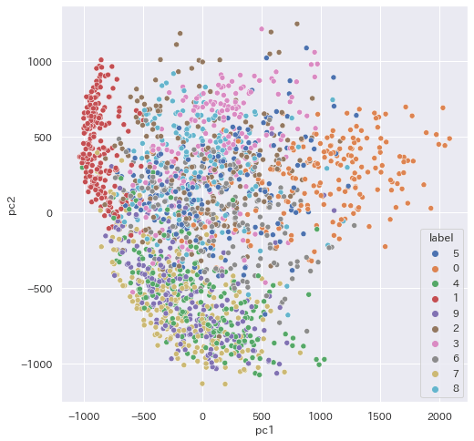
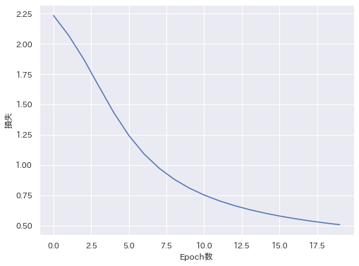
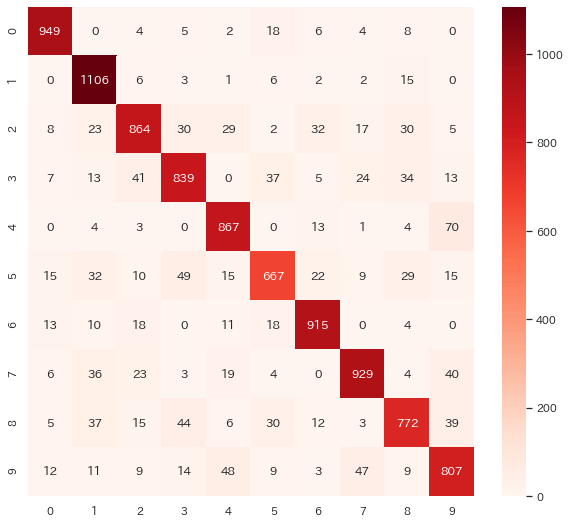

手書き文字の認識(MNIST)#
MNIST は、「0」~「9」の手書き数字の画像データセットです。 Yann LeCun らによって、手書き文字データセットの NIST データベースから抽出＆加工して、 機械学習のチュートリアル用に作成されて公開されています。

ここは、画像データを説明変数 (X)、ラベルを目的変数 (y) として、多クラス分類問題として、 学習モデルを作成してみます。
モジュールの準備
import numpy as np
import pandas as pd
import matplotlib.pyplot as plt
import seaborn as sns
try:
import japanize_matplotlib #matplotlibの日本語化
except ModuleNotFoundError:
import os
os.system('pip3 install japanize_matplotlib')
import japanize_matplotlib
sns.set(font="IPAexGothic") #日本語フォント設定
MNIST データ#
MNISTは、sklearn のサンプルデータセットに含まれています。 そこからダウンロードします。
from sklearn.datasets import fetch_openml
mnist = fetch_openml('mnist_784', as_frame=False)
MNISTデータは、mnistのプロパティに格納されています。
mnist.data: 画像データ 70000件mnist.shape: ラベル 70000件
print('画像データ', mnist.data.shape, type(mnist.data))
print('ラベル', mnist.target.shape, type(mnist.target))
ラベル
機械学習では、クラス分類の目的変数（カテゴリデータ）のことをラベル と呼びます。
画像データを確認してみましょう。 0~255 階調のグレースケールになっています。
784要素の配列はみにくいので、28x28の２次元配列に変換し、 値を表示してみます。（うっすらと数字が見ませんか？）
d = mnist.data[0].reshape([28,28])
for y in range(28):
for x in range(28):
print(f'{int(d[y,x]):3d}', end=' ')
print()
Matplotlibを用いると、グレースケール画像として表示されます。 ただし、グレースケール画像で、0が黒で白が255なので、文字が白くなります。
W = 16 # 横に並べる個数
H = 8 # 縦に並べる個数
fig = plt.figure()
fig.subplots_adjust(left=0, right=1, bottom=0, top=1.0, hspace=0.05, wspace=0.05)
for i in range(W*H):
ax = fig.add_subplot(H, W, i + 1, xticks=[], yticks=[])
ax.imshow(mnist.data.values[i].reshape((28, 28)), cmap=plt.cm.gray)
plt.show()
訓練データの準備#
MNISTの学習モデルを構築するときは、 機械学習では、28x28のグレースケールの画像を784次元の多次元データとして扱います。
まず、0〜255のグレースケール画像の値を0.0〜1.0の範囲に正規化しておきます。
今回もまず、ホールドアウト法を用いて学習するので、訓練データとテストデータに分割しておきます。
from sklearn.model_selection import train_test_split
X_train, X_test, y_train, y_test = train_test_split(X, y,
test_size=10000, random.state=0,
stratify=mnist.target)
print('訓練データ数:', len(X_train))
print('テストデータ数:', len(X_test))
層化
ラベルの割合は教師データとテストデータで均一になるように「stratify=mnist.target」により層化抽出（比例配分）しています。
さて、学習に進みましょうか？
画像データの分布 (寄り道)#
画像データ(768次元)を２次元に次元削減して、 手書き文字がどのように分布しているかみてみましょう。
60000個のデータは多すぎるので、とりあえず2000枚選んで、PCAで二次元に削減します。
from sklearn.decomposition import PCA
model_pca = PCA(n_components=2, random_state=0)
pc12 = model_pca.fit_transform(mnist.data[:2000]) # 2000枚選ぶ
df = pd.concat([
pd.DataFrame(pc12, columns=['pc1', 'pc2']),
pd.DataFrame(mnist.target[:2000], columns=['label'])], axis=1)
df.head()

散布図を書いてみましょう。
plt.figure(figsize=(15,15))
sns.scatterplot(data=df, x='pc1', y='pc2', hue='label')
plt.show()

結構、ごちゃごちゃに重なっている気がしますが、綺麗に分類できるのでしょうか？
t-SNE
最近は、次元削減のアルゴリズムとして、PCAよりt-SNEが好まれます。
from sklearn.manifold import TSNE
tsne = TSNE(n_components=2, random_state=0).fit_transform(mnist.data[:2000])
df = pd.concat([
pd.DataFrame(tsne, columns=['pc1', 'pc2']),
pd.DataFrame(mnist.target[:2000], columns=['label'])], axis=1)
plt.figure(figsize=(8, 8))
sns.scatterplot(data=df, x='pc1', y='pc2', hue='label')
plt.show()
機械学習の世界は、どんどん新しい技法を試していきましょう。
多層パーセプトロン#
MNISTは、綺麗に線形分離できなさそう？なので、 多層パーセプトロン(MLPClassifier)を使って分類モデルを作ってみます。
sklearn モジュールでは、MLPClassifierをインポートして用います。
パラメータ・チューニング#
MLPClassifier は、豊富なハイパーパラメータが用意されています。
ニューラルネットワークの原理を確認しながら、適切にパラメータをチューニングしましょう。
hidden_layer_sizes: 中間層のサイズを設定します。
中間層が 3 つ (各中間層のニューロン数が 100 個、200 個、100 個) の 5 層ニューラルネットワークを 設定したいときは、次のように設定します。
activation: 中間層の活性化関数
- identity:恒等関数
- logistic:シグモイド関数
- tanh:双曲線正接関数
- relu:ランプ関数
solver: 重みの最適化手法
- lbfgs:準ニュートン法に属す BFGS の一種
- sgd:確率的勾配降下法
- adam:確率的勾配降下法にモーメントをつける
max_iter: エポック数
学習の例#
ここでは、３層パーセプトロンで、活性化関数はシグモイド関数、最適化は確率的勾配降下法を用いてみます。
from sklearn.neural_network import MLPClassifier
model = MLPClassifier(hidden_layer_sizes=(128,), activation='logistic', solver='sgd', max_iter=20, verbose=10, random_state=0)
用意した訓練データを学習させます。
Iteration 1, loss = 2.23320721
Iteration 2, loss = 2.06989000
Iteration 3, loss = 1.87448221
Iteration 4, loss = 1.65146930
Iteration 5, loss = 1.43223928
Iteration 6, loss = 1.24331458
Iteration 7, loss = 1.09217506
Iteration 8, loss = 0.97428410
Iteration 9, loss = 0.88245881
Iteration 10, loss = 0.80984222
Iteration 11, loss = 0.75156470
Iteration 12, loss = 0.70398038
Iteration 13, loss = 0.66461657
Iteration 14, loss = 0.63140618
Iteration 15, loss = 0.60303138
Iteration 16, loss = 0.57851333
Iteration 17, loss = 0.55715012
Iteration 18, loss = 0.53832779
Iteration 19, loss = 0.52163356
Iteration 20, loss = 0.50675142
ConvergenceWarningとは
Iteration(Epoch数)が足りないので、学習が不十分だと行われています。
logは学習の様子を記録したログデータです。
グラフで表示してみると、学習の進捗をみることができます。

ニューラルネットワークでは、 損失 (loss) が減少しているときは、まだ順調に学習が進んでいることになります。
Epoch数と過学習
もう少しEpoch数を増やした方がいいでしょう。 あまり増やしすぎると、過学習になります。
分類モデルの評価#
学習済みの分類モデルからテストデータの予測をしてみましょう。 これは、未知の手書きデータに対する認識した文字となります。
とりあえず、 クラス分類モデルができたら正解率を表示してみます。
print('正解率(train)', model.score(X_train, y_train))
print('正解率(test)', model.score(X_test, y_test))
ひと昔前は、ハガキの郵便番号を読み取って、自動的に仕分けする装置であっても、 70%の正確さも出ませんでした。それに比べると、素晴らしい正解率といえます。
混同行列も表示してみましょう。
from sklearn.metrics import confusion_matrix
y_pred = model.predict(X_test)
cm = confusion_matrix(y_test, y_pred)
sns.heatmap(cm, annot=True, cmap='Reds')
plt.show()

実際にどのように予想されているか、画像と予測値を表示してみましょう。
#fig.subplots_adjust(left=0, right=1, bottom=0, top=1.0, hspace=0.05, wspace=0.05)
def plot_mnist(X, y):
fig = plt.figure()
for i in range(10):
ax = fig.add_subplot(1, 10, i + 1, xticks=[], yticks=[])
ax.imshow(X[i].reshape((28, 28)), cmap=plt.cm.gray)
print(y[:10])
plt.show()
plot_mnist(X_test, y_pred)
Let's try
MLPClassfierのパラメータを変更して、正解率がどう変わるか調べてみよう。
最近のニューラルネットワークの定番パラメータ
- 隠れ層を増やす
- 活性化関数:
relu - 最適化:
adam
PyTorch, TensorFlow, Kelas
深層学習技術は、近年、高度化してきています。 より細かくネットワークの構成やパラメータを設定できる PyTorch, Tensorflow, Kelasなどのニューラルネットワーク専用のライブラリが登場しています。 （たぶん、後期の情報ゼミでは、PyTorchを使って、より高度な学習に挑戦します。）
興味のある人は、 PytorchやTensorflowなどニューラルネットワークを構築してみてください。 より高い正解度のモデルを構築することができます。 （なお、研究レベルの予測モデルを使るときは、 このようなニューラルネットワークフレームワークを活用することになります。）
自分の手書き文字を認識する⭐️#
自分自身で書いた手書き文字を認識してみましょう。
紙を用意して数字を書いて、スマホで撮影します。
Tip
黒いマジックやサインペンなどで太めにはっきりと書いた方がいいですよ。
１文字だけ適当に切り出して、PNGファイルに保存してみてください。
Pillow/PIL ライブラリ#
画像は、Pillow/PIL ライブラリを用いて操作します。
まずColab上で自分のファイル（例.2.png）を読み込めるか、表示して確認しておきます。
MNIST用のモデルの画像ファイルは、 グレースケールの28x28なので、Pillow/PIL ライブラリを用いて変換します。
このPillow画像データをNumPy配列に変換し、784次元のデータにします。
MNISTのモデルは、白黒が反転している画像で学習しているため、白黒を反転させて、0.0〜1.0に正規化します。 これで入力データはできました。
それでは、学習済みのモデルを使って予測してみましょう。(正しく予想できるかな？)
アプリケーションへの組み込み#
人工知能アプリケーションに学習済みモデルを組み込むときは、 毎回学習しなくて済むようにモデルだけ、ファイルに保存しておきます。
pickle形式
Pythonでのオブジェクトをシリアライズする一般的な方法です。シリアライズ（直列化）とは、プログラミング言語においてオブジェクトをバイト列のデータに表現に変換することです。逆に、デシリアライズ（非直列化）とは、シリアライズしたバイト列から元のオブジェクトに復元することです。
保存されたファイルの大きさは1.6Mバイト程度になります。 （もちろん、学習したデータやパラメータにもよります。）
import pickle
with open('mnist-model.pickle', mode='rb') as fp:
model = pickle.load(fp)
model.predict(myimage)
練習#
MNISTは、練習用データとしても簡単に高い精度が得られるので、あまり練習にならないと言われています。 （機械学習の進化は恐ろしいですね。）
というわけで、MNIST以外のデータの分類モデルも試してみましょう。
Fashion-MNIST#
Fashin-MNISTの画像データを使って、 ファッションアイテムの分類をしてみよう。

from sklearn.datasets import fetch_openml
fashion_mnist = fetch_openml('Fashion-MNIST', as_frame=False)
CIFAR-10#
CIFAR-10データセット（Canadian Institute For Advanced Research)は、次のラベルがつけられた画像データセットです。
- ラベル「0」： airplane（飛行機）
- ラベル「1」： automobile（自動車）
- ラベル「2」： bird（鳥）
- ラベル「3」： cat（猫）
- ラベル「4」： deer（鹿）
- ラベル「5」： dog（犬）
- ラベル「6」： frog（カエル）
- ラベル「7」： horse（馬）
- ラベル「8」： ship（船）
- ラベル「9」： truck（トラック）
Alex Krizhevsky氏／Vinod Nair氏／Geoffrey Hinton氏によって、オブジェクト認識用画像データセット「80 Million Tiny Images」から収集されて作成されたサブセットに由来しています。

from sklearn.datasets import fetch_openml
cifar10 = fetch_openml('CIFAR_10', as_frame=False)
カラー画像になっているので、より画像認識の雰囲気が楽しめるデータです。 ただし、データの次元が大きくなりすぎるので、そろそろPyTorchやTensorflow, Kerasを使わないと苦しいかもしれません。